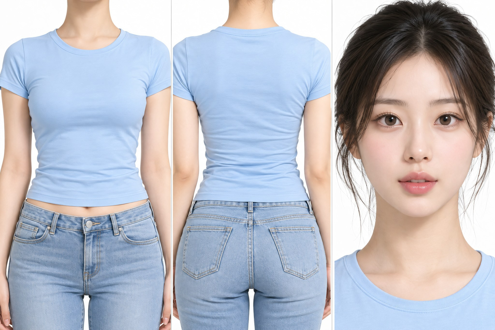
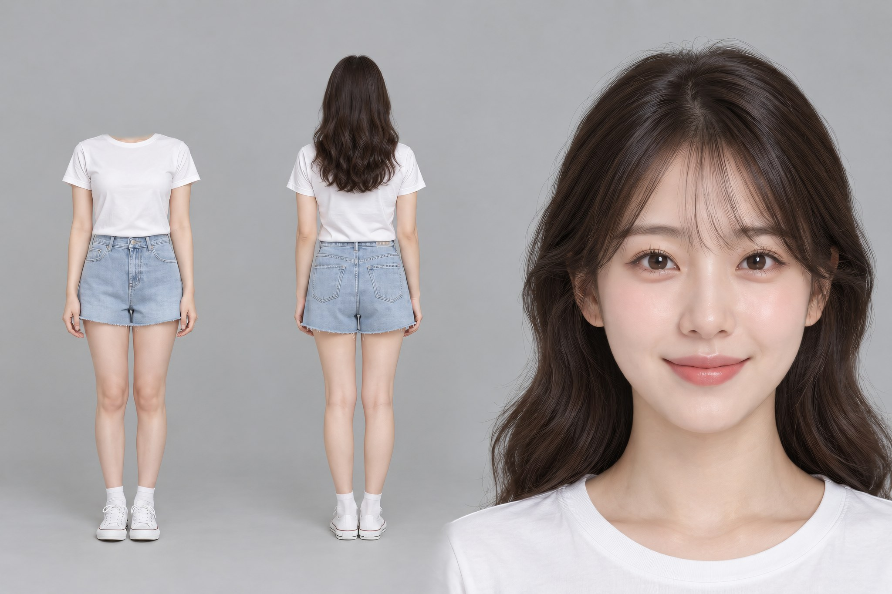
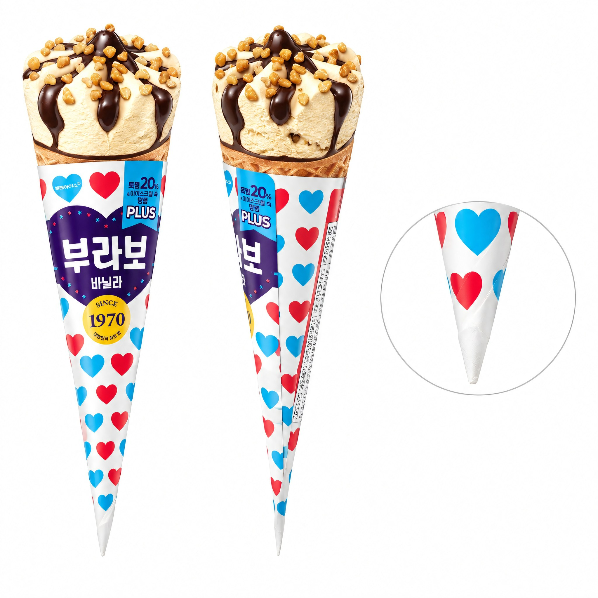
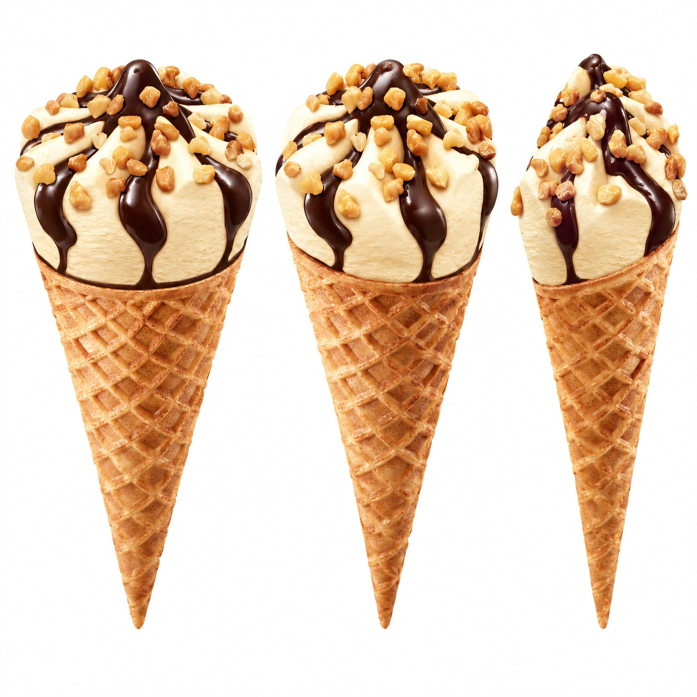

10-30 · 사진 단계를 구독 GPT 로(0cr) 바꾸고 2K 업스케일·앵커 틀을 넣은 결과입니다. 왼쪽이 v2.1, 오른쪽이 v2.2 입니다. 그림을 누르면 원본 크기로 열립니다. 영상은 아직 돌리지 않았습니다.
# plan — 부라보콘 바닐라 (v2 · 강한 장면 하나)
작성: 2026-10-30 part=plan
스타일: 기발 · 이유 — 장치가 제품 이름 "부라보(Bravo)"이고, 세상이 한 입에 기립 박수를 보내는 동화 같고 유쾌한 사건이 핵심이라 "크게"보다 "기발"이 자연스러움. 레트로 친근감·유쾌한 톤(brief)과도 맞음. (mood=auto)
장치: 이름이 현실 — 제품 이름 "부라보(Bravo)"가 세상의 실제 반응(기립 박수·"브라보!" 함성)으로 나타남.
장면: 더운 날 거리에서 여성이 콘을 한 입 '바삭' 베어무는 순간, 그 바삭 소리에 주변 거리 전체가 웅장한 오페라 극장으로 바뀌고 관중이 일제히 일어나 "브라보!"를 외치며 박수를 친다. 여성은 태평하게 씹으며 가볍게 고개만 숙인다.
왜 이 제품: 제품 이름 "부라보(Bravo)" + 광고주 포인트 원문 "마지막 한 입까지 유지되는 바삭한 식감"(brief.json) → 바삭한 한 입에 세상이 "브라보!"로 응답. 이름을 빼면(=다른 콘) 'Bravo 기립 박수'라는 장면 자체가 성립하지 않음.
첫 1초: 화면 가득 먹음직한 콘(바닐라+초코 드리즐+땅콩, Image 1). 여성이 들어 한 입 베어뭄 → 와플 콘이 바삭 꺾이는 소리.
정점: 2-10초 · 바삭 소리와 동시에 여름 거리가 웅장한 오페라 극장으로 폭발 변환(샹들리에·벨벳 좌석·스포트라이트) → 관중 전원 기립 박수·"브라보!" 함성 · 크래시 돌리·낮은 회전·음악 정점.
대비: 극장 기립 박수·함성 폭발 ↔ 여성은 조용히 씹으며 가볍게 목만 숙임.
끝 카피: 마지막 한 입도, 브라보.
첫 장면 그림: 불필요 · 이유 — 불가능 요소가 '환경 전체 변환'(거리→극장)이라 글로 고정 가능하고 시댄스가 잘 처리함. 제품은 제품 시트(Image 1)로 모양 고정. 미니어처·제품 위 작은 세계·이름이 실물화된 사물 없음.
버린 장치 셋(원리만 떠올린 뒤 고름):
- 크기 뒤집기: 사람이 콘 위 바닐라 빙판·땅콩 바위를 오르는 소인국 — 이름과 무관, 다른 콘에도 똑같이 쓸 수 있고 미니어처 접촉이라 시댄스 난이도 높음.
- 규모 폭발: 바삭 소리가 도시를 삼키는 충격파 — 이름이 아닌 성질만 쓰고 기본값이라 피함.
- 성질이 세상 규칙: 바삭함이 물리 법칙이 되어 세계가 유리처럼 깨짐 — 이름과 무관하고 '맛없어 보이면 안됨' 조건과 충돌 위험(파괴적 인상).
구성: BEATS · 4컷 · 이유 — 환경 변환(거리→극장→거리)과 대비(기립 박수 폭발↔침착한 여성)를 위해 컷 경계 필수. 정점 컷(Shot 2, 2-10s)이 가장 길다.
## 15초 흐름
| 구간 | 시간 | 컷 크기 | 동작(누가·무엇이 변함) |
|---|---|---|---|
| 도입 | 0-2s | 클로즈업 | 여성이 먹음직한 콘(Image 1)을 들어 한 입 베어뭄 → 와플 콘 바삭 꺾임(CRUNCH) |
| 정점 | 2-10s | 와이드·크래시돌리 | 바삭 소리와 함께 여름 거리가 오페라 극장으로 폭발 변환 → 관중 전원 기립·박수·"브라보!" 함성·스포트라이트 집중 · 여성은 가운데서 태평하게 씹으며 가볍게 목 숙임 |
| 대비·회수 | 10-12s | 미디엄 | 박수 잦아들며 다시 밝은 여름 거리 · 여성 만족한 표정으로 한 입 더 즐김 |
| 끝 | 12-15s | 클로즈업 | 멀쩡하고 먹음직한 콘(Image 1) 또렷이 · 끝 카피 「마지막 한 입도, 브라보.」 |
## 장소(loc185 · 글 기본)
더운 여름날 밝은 도심 인도 — 깔끔한 현대 거리, 맑은 파란 하늘, 강한 한낮 햇빛. 간판·글자·다른 사람·실제 상표·거울·액자 없음, 러그·바닥 깔개 없음, 광각 금지. (거리→극장으로 변환되는 전제라 컷 연속성이 깨지는 것이 의도 → 장소 사진 불필요, 글로 지정)
## 인물(person186)
THE PASSERBY — 한국 여성 20대 초, 개성 있는 미인(또렷한 둥근 눈·짧은 눈꼬리·살짝 들린 콧끝·도톰한 입술), 여름 캐주얼(흰 반팔 티+하늘색 데님 숏팬츠), 태평하게 즐기는 표정. 앵커 3면도로 생성(paid_plan person 칸, studio 룩).
## 소리(none)
생성 오디오(generate_audio:true)가 바삭 소리·관중 박수·"브라보!" 함성·오케스트라를 처리. 별도 나레이션 없이 장면(바삭 한 입 → 세상의 브라보)과 끝 카피가 포인트("마지막 한 입까지 바삭")를 충분히 전달.
## 엔딩(STAMP)
마지막 제품 클로즈업이 깔끔하고 하단 빈 곳에 글자 얹기 적합 → STAMP. 해태아이스 공식 로고 미확보 → 무로고·포장 표시 글자 「해태아이스」 조판 + 한 줄 「마지막 한 입도, 브라보」.
## 제품 시트 주의
포장(하트무늬·보라 라벨·골드 배지·브랜드 글자)은 생성 금지(글자·로고 금지) → 시트는 **노출된 콘**(바닐라+초코 드리즐+땅콩 토핑, 격자 와플 콘)만, 흰 바탕 다면. 영상에서도 노출 콘을 든/베어무는 모습으로만, 포장은 노출하지 않음.


mode: new · port 9340 attach: [] CHARACTER SHEET — THE PASSERBY (Korean woman, early 20s, 3 PANELS, GRAY BACKDROP) One single character sheet of one young Korean woman, three views arranged side by side on ONE continuous plain neutral light-gray studio backdrop. NO dividers, NO borders, NO frames, NO lines between the views — the same seamless gray background runs unbroken across the whole image and the three views simply sit on it, separated only by empty space. Left view — HEADLESS FULL-BODY FRONT: the body from the shoulders down to the feet, standing straight, arms hanging relaxed close to the sides, facing camera. THIS VIEW HAS NO HEAD AT ALL: no face, no hair, no neck. The figure ends softly and naturally at the rounded shoulder line, as if the head were simply absent — not a plastic mannequin, not a dress form, no stand, no pedestal, no hard flat slice. Generous empty gray space above where the head would be. The figure is small in the frame with wide margins on all sides. Center view — FULL-BODY BACK: the same young Korean woman seen from behind, head to toe, same standing pose, arms close to the sides, facing away from camera. This view KEEPS the head and the hair. Same small scale and generous margins as the left view. Right view — FACE CLOSE-UP: a portrait framed on the face, cropped just below the collarbones. The head fills most of this view: the face from forehead to chin takes up more than half of this view's height. Do NOT include the chest or the torso. THE PASSERBY: early 20s, slim build, about 165cm. oval face, round bright eyes with a short defined eye-tail, small nose with a slightly upturned tip, naturally full lips, clear healthy fair skin. fresh, cheerful and naturally pretty Hair (center and right views only): dark brown, soft natural waves, shoulder length, slight side part, light see-through bangs, worn behind both shoulders and falling down the back, symmetric on the left and the right, nothing draped over the chest or in front of either shoulder. Makeup: fresh dewy skin, soft coral lip, light blush Expression: relaxed, blissful enjoyment Outfit (identical in all three views): short-sleeve round-neck white cotton t-shirt, regular fit, hem at the hip. high-waist light-blue denim shorts, loose fit, raw hem. white ankle socks, white canvas sneakers. No jewellery, no bag, no hat, no logos, no printed graphics anywhere on the clothing. Layout: one seamless light-gray studio backdrop across the entire image, identical soft lighting everywhere. The two full-body views are the same height and scale so the body reads as the same person, both showing the complete figure down to the feet with the whole shoe visible and a clear margin of floor below. Plenty of empty gray space around every view — airy, uncrowded, editorial. Lighting: soft, even directional studio light from the front, gentle shadow rolloff, readable skin texture, subtle catchlights in the eyes, clean neutral exposure, no glare on the hair, light and evenly lit background, not dark. Clear, even skin tone: no redness or blotchy colour on the cheeks, nose tip, under the eyes or on the knees. Optics: sharp focus on the subject, fine facial detail in the close-up, clean realistic photographic image, crisp fabric texture. LOCKS: exactly one identical Korean woman, early 20s. THE LEFT VIEW IS HEADLESS — no face, no hair, no neck, ending naturally at the rounded shoulder line. The center back view and the right close-up both keep the head and hair. NO dividers or lines anywhere — one continuous gray background. The right close-up is cropped just below the collarbones and does NOT show the chest or torso. Feet and white canvas sneakers fully visible in both full-body views, white round-neck short-sleeve t-shirt, light-blue denim shorts, dark brown wavy shoulder-length hair with light see-through bangs, soft coral lip, relaxed blissful expression. Exactly one face in the whole sheet, and it is in the right view. No extra people, no text, no props, no jewellery, no logos. Aspect ratio 3:2.


기획 모델이 「포장 글자 생성 금지」를 이유로 포장을 뺐습니다. 첫 컷·끝 컷에 라벨을 보여 줄 참조가 없어져서, 「포장 제품은 팔리는 그대로 시트」 규칙을 더했습니다(다시 돌려 확인은 아직).
mode: new · port 9340 attach: ['C:\\AI_Production_System\\onecue_option3\\_v2_부라보콘\\client\\p1.webp', 'C:\\AI_Production_System\\onecue_option3\\_v2_부라보콘\\client\\p3.jpg', 'C:\\AI_Production_System\\onecue_option3\\_v2_부라보콘\\page_capture\\shots\\00.png', 'C:\\AI_Production_System\\onecue_option3\\_v2_부라보콘\\page_capture\\shots\\01.png', 'C:\\AI_Production_System\\onecue_option3\\_v2_부라보콘\\page_capture\\images\\000.png'] A clean product reference sheet on a pure white seamless background, soft even studio lighting. Show the same single waffle ice cream cone at three angles side by side (front, three-quarter and side): a golden-brown waffle cone with a crosshatch lattice texture, topped with a swirl of pale vanilla ice cream, glossy dark-chocolate drizzle running down it, and plenty of crushed peanut pieces scattered over the top; crisp, fresh and mouth-watering. Keep the shape, components, colours and material exactly as in the reference photos; do not invent any hidden side or the inside of the cone. No paper sleeve, no packaging, no printed text, no logo, no hands, no background props. Realistic appetizing food photography, sharp focus. Aspect ratio 1:1. Attached images are Image 1..5 in order.
# Plan — 롤렉스 서브마리너 40 (강한 장면 하나 · v2.0) 스타일: 크게 · 이유: 1467만 원 명품·"비싸고 멋있어서 자랑하기 좋다" → 블록버스터급 사건을 진지하게 보여 좌중의 경탄을 끌어낸다. 기발(귀여운 소동)은 프리미엄 과시 톤을 깎는다. 장치: 이름이 현실 장면: 고급 비즈니스 만찬장에서 남자가 손목을 드는 순간, 파란 다이얼의 바다가 실제로 쏟아져 만찬장 전체가 심해로 바뀌고 그는 소맷부리를 정돈하며 태연히 자부심을 드러낸다. 왜 이 제품: SUBMARINER(잠수함·다이버) 이름 + 300m 방수 + 로열 블루 "오션" 다이얼 + "자랑하기 좋다"(좌중 경탄=과시). 다른 시계면 '심해'가 나오지 않는다 — 이름을 빼면 장면이 성립하지 않는다. 첫 1초: 손목 타이트 클로즈업 — 소맷부리가 당겨지며 파란 다이얼이 드러나고, 돌리는 순간 다이얼에서 첫 물결이 공기로 솟는다(제품이 이미 화면에). 정점: 2.5-9.5초 · 만찬장 전체가 심해로 변하는 것이 가장 크게 — 집기·잔·주변 손님이 푸른 물속에서 느리게 떠오르고 거품·빛줄기가 방을 채움. 대비: 온 만찬장이 심해로 삼켜짐 ↔ 남자는 태연히 소맷부리를 정돈하는 자부심 미소. 끝 카피: 손목 위의 심해 첫 장면 그림: 불필요 · 이유: 불가능 요소가 '환경 전체(방→바다)'의 변화라 글로 고정된다(미니어처 사람·제품 위 작은 세계가 아님). 「크게」 전형. 버린 셋(원리만): - 크기 뒤집기: 시계가 거대한 바다 세계가 되고 사람이 그 안의 잠수부 → 차는 사람(과시 주체)이 사라져 포인트가 약함. - 규모 폭발: 손목을 턴 순간 시계에서 해일이 터져 식당을 삼킴 → 강하지만 '왜 바다'가 이름보다 성질에 기대고 규모 폭발은 기본값. - 성질이 세상 규칙: 300m 방수가 규칙이 되어 식당이 수압 세계로 → 좋지만 추상적이라 '이름이 현실'보다 덜 또렷. 구성: BEATS · 3컷 · 정점 컷이 가장 길다. ## 15초 흐름 | 구간 | 초 | 동작(누가·어느 손·무엇이 변함) | 컷·카메라 | |---|---|---|---| | Shot 1 | 0-2.5 | 남자가 오른손 소맷부리를 왼손으로 살짝 당겨 손목시계를 드러내고 손목을 바깥으로 돌림 → 파란 다이얼에서 첫 물보라가 공기로 솟음 | 손목 타이트 클로즈업 · 빠른 진입 | | Shot 2 (정점) | 2.5-9.5 | 그 물이 폭발적으로 번져 만찬장 전체가 심해로 바뀜 — 테이블·잔·주변 손님이 푸른 물속에서 느리게 떠오르고 거품·빛줄기가 방을 채움, 남자만 중심에 선 채 | 와이드 · 크래시 돌리·낮은 회전·에너지 최대 | | Shot 3 | 9.5-15 | 물이 가라앉고 심해가 남은 채, 남자가 왼손으로 소맷부리를 가볍게 정돈하며 자부심 미소 → 카메라가 손목시계로 밀고 들어가 또렷이 | 미디엄 → 손목 푸시 인 | 글 장소: 인라인 텍스트(고급 비즈니스 만찬장 — 어두운 패널·황금빛 조명·흰 테이블보) · 맞는 loc185 카드 없음 글 인물: 앵커 시트로 대체(anchor_man, 3면도) — mid-40s 한국 남성·각진 턱·관자놀이 은발·미드나이트 네이비 수트
# 기획 — 이지드롭 변기크리너 (v2_다온에스아이 · 강한 장면 하나 · v2.0) 스타일: 크게 · 이유: 톤이 통쾌·깔끔·시원이고, 지저분한 변기 청소라는 숙제가 거대한 정화에 한 번에 쓸려 나가는 카타르시스가 첫 1초부터 눈을 못 떼게 한다. 장치: 성질이 세상 규칙 — 제품의 성질 「물에 닿으면 풀려 녹아 사라진다(생분해 Pulp)」가 변기 전체의 물리 법칙이 된다. 장면: 흰 이지드롭 패드가 변기 물에 톡 닿는 순간, 「물에 닿으면 녹아 사라진다」는 성질이 변기 전체의 규칙이 되어 — 변기 안의 때와 구석에 서 있던 낡은 전통 변기솔까지 맑은 파란 정화의 소용돌이에 녹아 빨려 사라지고, 눈부시게 반짝이는 변기만 남는다. 왜 이 제품: 이름 **Easy drop**(drop=물에 떨어뜨림)+세정제 함유 **생분해 Pulp 패드**가 「물에 닿으면 풀려 녹아 사라짐」(판매 사실3)·「쓰고 바로 변기에 버리면 끝, 브러시 보관·세척 없음」(포인트 원문). 다른 제품을 넣으면 「녹아 사라짐」이 성립하지 않음 → 이 제품에서만 나오는 장면. 첫 1초: 손에 쥔 이지드롭 핸들 끝의 흰 패드가 변기 물 표면에 막 닿고, 닿은 자리에서 맑고 파란 정화의 파문이 번쩍 퍼진다(제품 라벨 정면). 정점: 4-10초 · 변기가 통째로 거대한 맑은 정화 소용돌이가 되어 낡은 변기솔을 녹여 삼키는 순간 — 변화가 가장 크고 카메라 에너지 최대. 대비: 욕실을 집어삼킬 듯한 거대한 정화 소용돌이 ↔ 패드를 한 번 담그고 뒤로 한 발 물러서는 사람의 조용한 놀람. 끝 카피: 쓰고 톡, 녹아서 끝. ### 버린 장치 셋 (원리 점검) - 크기 뒤집기: 패드가 거대한 뗏목이 되고 사람이 그 위 소인 → 「큰 패드」만 남고 고유의 「녹아 사라짐」이 빠져 약함. - 규모 폭발: 작은 물내림 한 번이 욕실을 삼키는 거대 소용돌이 → 「크게 내려감」으로 흔하고, 녹아 없어지는 차별점이 묻힘. - 이름이 현실: 거대한 물방울 하나가 모든 때를 삼킴 → 좋지만 「drop 모양」에 그쳐 생분해 「녹는다」 성질 차별점이 약함. 첫 장면 그림: 불필요 · 이유: 불가능 요소가 「환경 전체가 변하는 정화 소용돌이」라 글로 고정됨(크게 스타일). 제품 위 미니어처·실물화한 접사가 없어 opening 그림 없이 됨. ### 15초 흐름 (BEATS · 5컷 · 정점 컷이 가장 김) | 구간 | 컷 | 동작 (누가·어느 손·무엇이 변함) | 화면 크기·카메라 | |---|---|---|---| | 0-2s | S1 | 한 손이 이지드롭 핸들을 쥐고 패드 끝을 변기 물에 톡 담근다 → 닿은 자리에 파란 정화 파문이 번쩍 퍼짐 | 클로즈업(제품 라벨 정면)·고정 | | 2-4s | S2 | 물이 돌며 빛나기 시작 → 변기 안 누런 때가 맑은 물로 풀리고, 구석의 낡은 전통 변기솔이 가장자리부터 녹기 시작 | 미디엄·살짝 들어감 | | 4-10s | S3 (정점) | 변기가 거대한 맑은 정화 소용돌이가 됨 → 낡은 변기솔이 통째로 녹아 소용돌이에 빨려 사라짐 · 사람은 뒤로 한 발 물러나며 입을 벌려 놀람(머리칼·소매가 정화의 바람에 날림) | 와이드·crash-dolly 인+낮은 회전 궤도+미세 흔들림, 에너지 최대 | | 10-13s | S4 | 소용돌이가 배수구로 한 번에 쑥 빠지고 눈부시게 반짝이는 변기만 남음 · 사람 손엔 깨끗한 핸들만(패드는 녹아 없음) | 미디엄·정지로 호흡 · 나레이션 자리 | | 13-15s | S5 | 반짝이는 변기 옆에 이지드롭 핸들+새 패드가 라벨 정면으로 또렷(제품 단독, 사람 없음) | 클로즈업 · 엔드컷 | - 구성: BEATS 5컷 — 거대한 소용돌이의 「크기 회수」(S4 반짝 변기)와 사람 반응(S3), 제품을 첫·끝 컷에 또렷이 보여야 하므로 한 테이크로 묶지 않음. 정점 S3가 가장 김(6초). - 참조: 제품=product_sheet(Image1) · 인물=anchor_cleaner(Image2, person186_08 기반 30대 중반 여성) · 장소=place_bathroom(Image3, 5컷 모두 같은 욕실이라 생성).
# plan — 닥터피엘 샤워기 비타민 필터 (강한 장면 하나 · v2.0) 스타일: 크게 · 이유 brief.json mood=bgrade 지정 + 평범한 욕실에서 블록버스터급 사건이 played straight 로 터지는 게 이 "깨끗한 물+과일향"을 가장 크게 보이게 함 장치: 규모 폭발 장면: 욕실에서 그녀가 필터 샤워기를 켜는 순간, 분사되는 물이 유리처럼 맑은 물보라와 감귤·흰 꽃이 뒤섞인 거대한 폭풍으로 부풀어 욕실을 천장까지 삼킨다. 왜 이 제품: 광고주 포인트 원문 「잔류 염소를 차단해 … 상큼한 과일향은 더해주는」 → 폭풍의 물은 유리처럼 맑고(잔류염소 100%), 그 안에 감귤·꽃(과일향)이 쏟아진다. 「맑은 물+과일향」을 빼면 장면이 성립하지 않는다 — 일반 샤워기면 그냥 물일 뿐. 첫 1초: 그녀의 손이 필터 샤워기를 켜고, 살수면에서 첫 물줄기가 터지는 순간 이미 맑은 물보라와 감귤 꽃잎 몇 장이 함께 쏟아져 나온다(제품 즉시 화면에). 정점: 4-11초 · 욕실 전체를 삼키는 거대한 감귤·물 폭풍이 천장까지 치솟고(가장 길고 가장 크게), crash-dolly·낮은 회전·흔들림으로 규모 최대 대비: 욕실을 통째로 삼키는 거대한 과일·물 폭풍 ↔ 그 한가운데서 눈을 감고 고개를 젖혀 숨을 깊이 들이쉬는 그녀의 고요한 안도 끝 카피: 돌려 끼우면, 온 욕실이 과수원 버린 장치 셋(한 줄씩): - 크기 뒤집기: 샤워 헤드가 거대한 폭포 절벽이 되고 손가락만 한 사람이 그 아래서 씻는다 → 과일향·맑은 물 이점이 안 보이고 미니어처 사람 접촉은 시댄스 약점. 버림 - 성질이 세상 규칙: 물이 닿는 곳마다 때·녹물이 사라지고 타일이 수정처럼 변한다 → 검증 안 된 전후 비교 효능 주장 위험(ad_safety). 버림 - 이름이 현실: "Dr.Piel"/비타민은 자연 낱말이 아니라 실물로 나타낼 그림이 약함. 버림 첫 장면 그림: 불필요 · 환경 전체가 변하는 「크게」라 불가능 요소(폭풍·감귤)가 글로 충분히 고정됨. 미니어처 사람·제품 위 작은 세계가 없음. 구성: BEATS(single_strong_scene) 5컷 — 반응 회수와 제품 팩샷이 필요해 ONE_TAKE 아님. 정점(3번 컷)이 가장 길다. ## 15초 흐름 | 구간 | 초 | 동작(누가·어느 손·무엇이 변함) | 컷 크기 | |---|---|---|---| | 1 발화 | 0-2 | 그녀의 오른손이 필터 샤워기를 켠다 → 살수면에서 맑은 물보라+감귤 꽃잎이 터져 나오기 시작 | 접사(CU) | | 2 번짐 | 2-4 | 물보라가 바깥으로 터지며 맑은 물·감귤·꽃의 벽이 욕실을 가로질러 밀려남 | 미디엄 | | 3 정점 | 4-11 | 폭풍이 욕실을 천장까지 삼킴(감귤 나무·과일·꽃·맑은 물) · 그녀는 눈 감고 고개 젖혀 숨 들이쉼 | 와이드(가장 긺) | | 4 가라앉음 | 11-13 | 폭풍이 감귤 안개·꽃비로 잦아듦 · 그녀가 눈을 뜨며 안도의 숨 · 물은 잔잔한 맑은 줄기로 | 미디엄 | | 5 제품 | 13-15 | 필터 샤워기가 또렷이, 잔잔한 맑은 물 · 헤드 정면 | 접사(제품 팩샷) | 음성: narration 1줄 — 화면으로 확정 불가한 차별점(잔류염소 100% 차단·과일향)을 [11-13s] 한 구간에 한국어 한 문장, 정색 중계 톤(크게에 맞춤). 엔딩: PACK_SUPER — 제품(핸드헬드 필터 샤워기) 형태가 히어로, 끝 깔끔한 제품 컷 + 공식 로고(client/brand_logo.png) 작게 + 끝 카피. 제품 자체에 로고가 안 보여 후반에 공식 로고 한 번. 노출: 핸드헬드라 옷 입은 채 손에 들고 사용 — 신체 노출 없음. 욕실은 라이브러리 loc185 에 없어 프롬프트에 글로 묘사(모든 컷 같은 욕실이 폭풍에 삼켜지므로 정확한 배경 연속성 중요도 낮음 → 장소 그림 생성 안 함). 생성: 제품 시트 1 + 인물 앵커 1 + 영상 1판 = 57cr (상한 80 안). 생성 승인 대기.